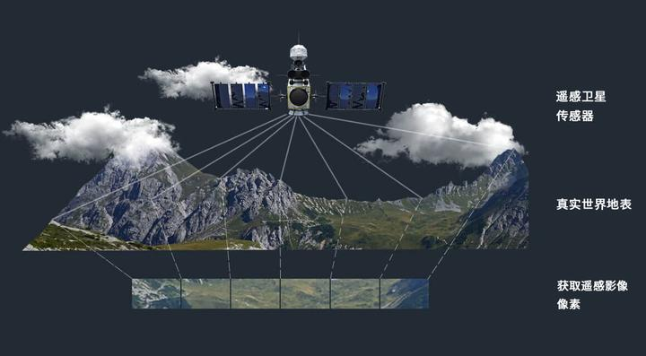

提供遥感影像的处理、解译和分析服务，为决策提供科学依据
我们提供遥感影像的处理、解译和分析服务，为决策提供科学依据。遥感影像处理是GIS系统的重要组成部分，能够为客户提供丰富的空间信息。
我们拥有专业的遥感影像处理设备和技术团队，能够处理各种类型的遥感影像，包括光学影像、雷达影像等。
我们的遥感影像处理服务广泛应用于城市规划、环境监测、国土资源、农业等领域，为客户的决策提供科学依据。

处理各种类型的遥感影像，提高影像质量。
对遥感影像进行解译，提取有价值的信息。
对遥感数据进行分析，生成分析报告。
基于遥感影像制作各种专题地图。